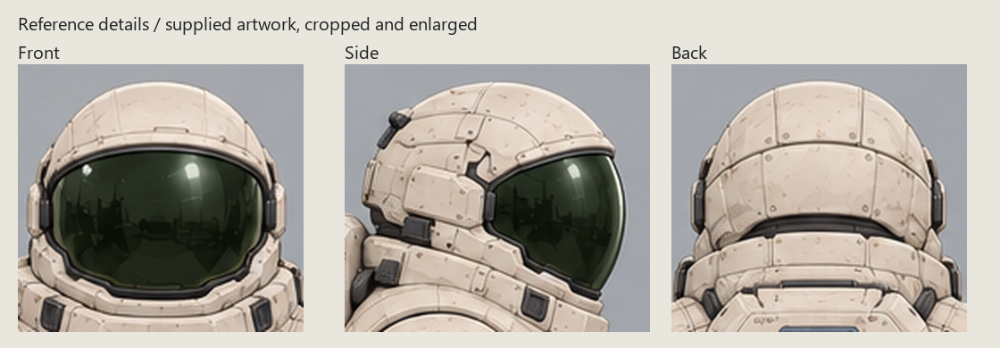
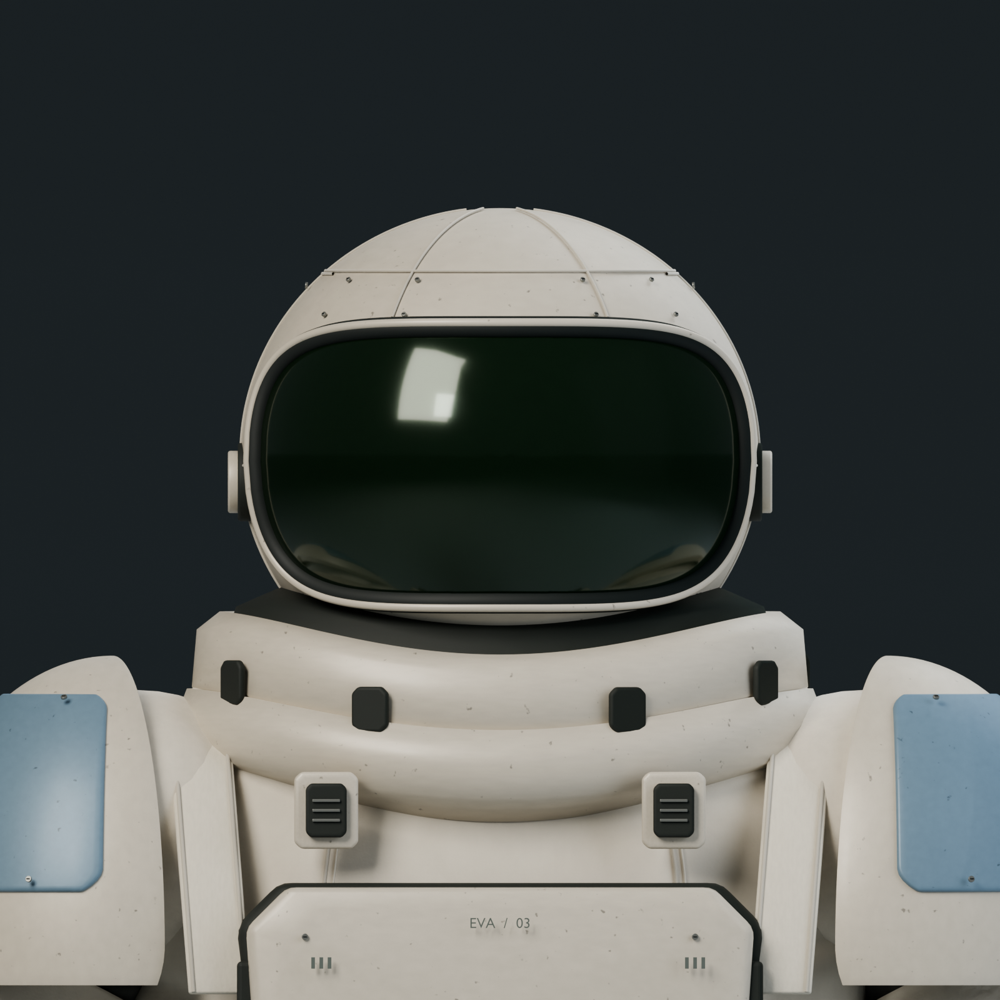
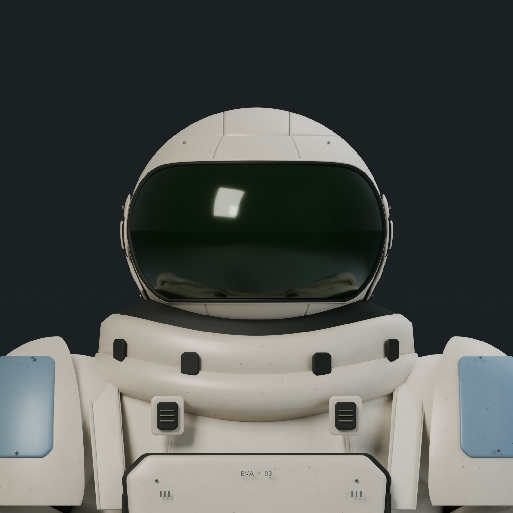
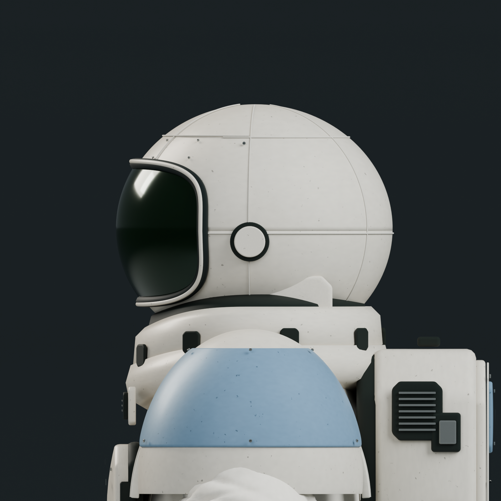
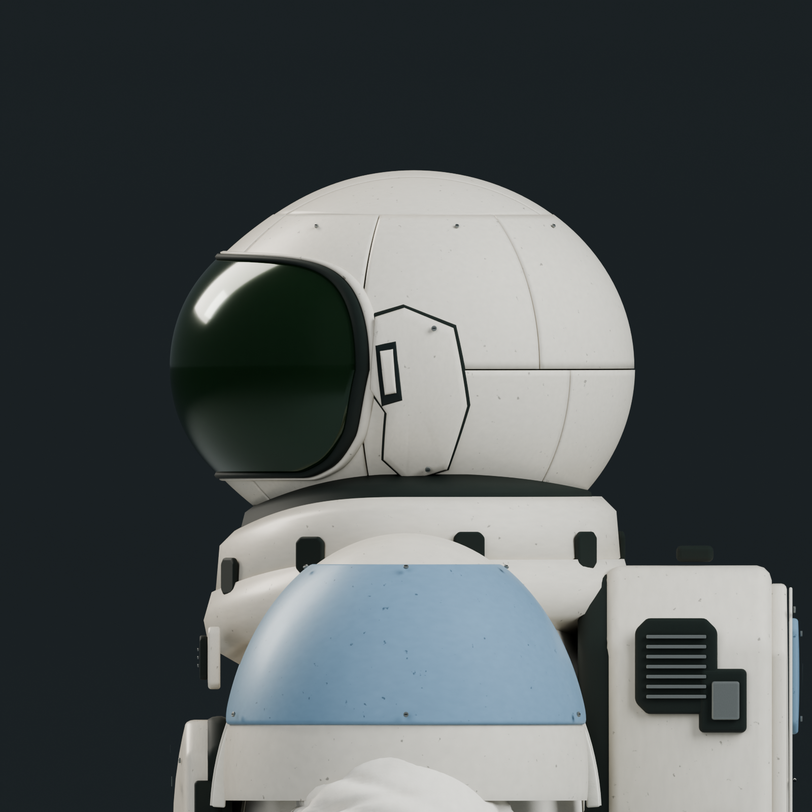
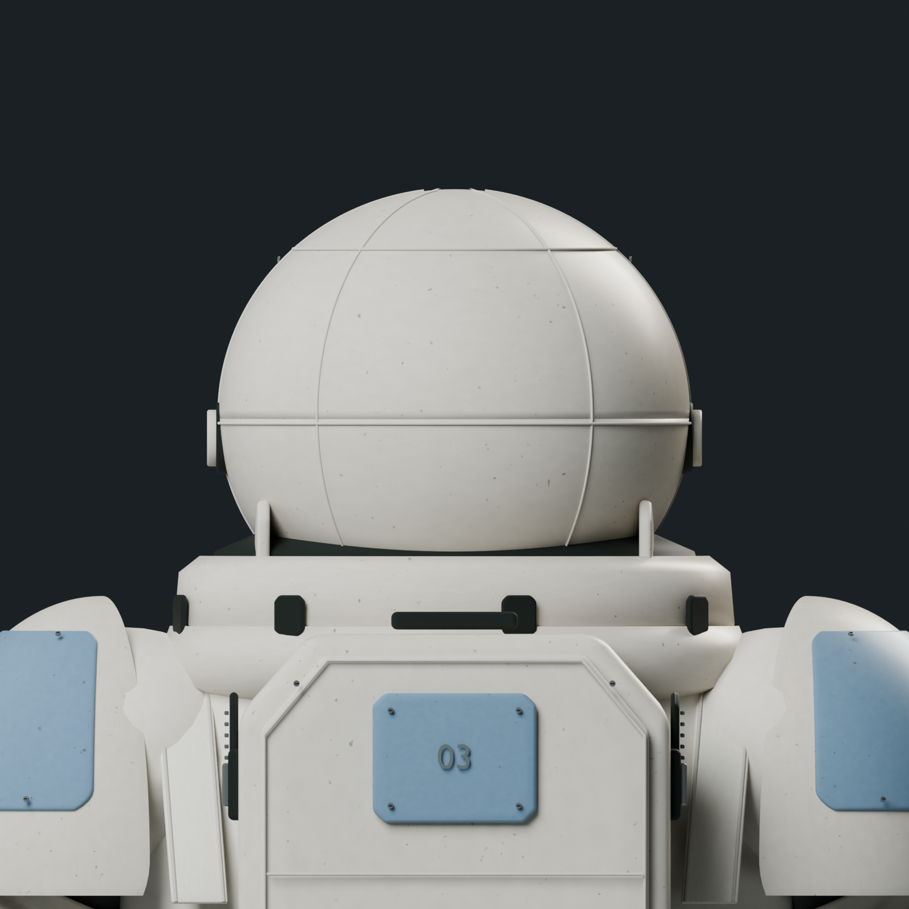
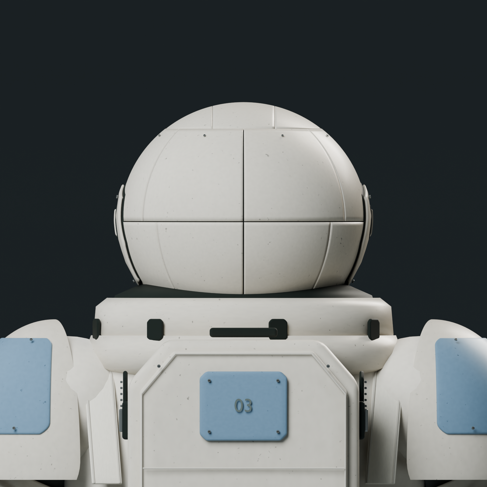
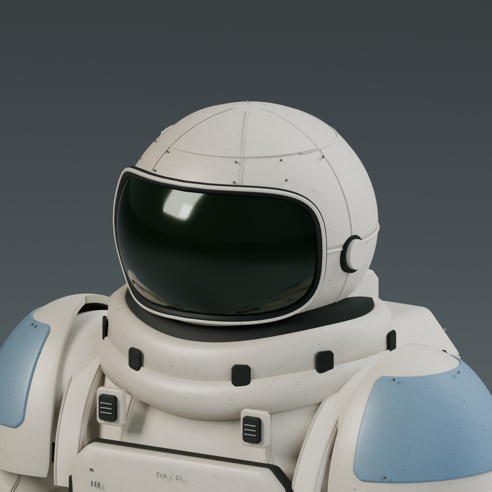
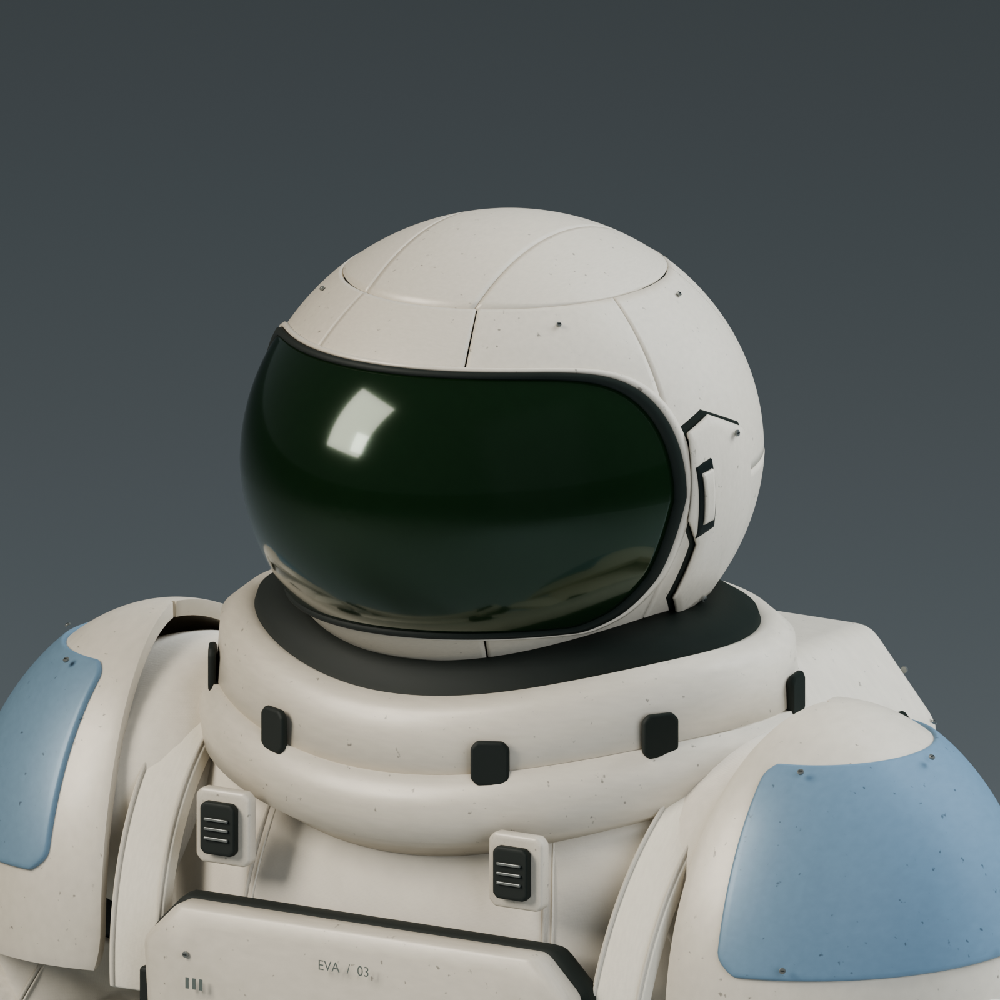
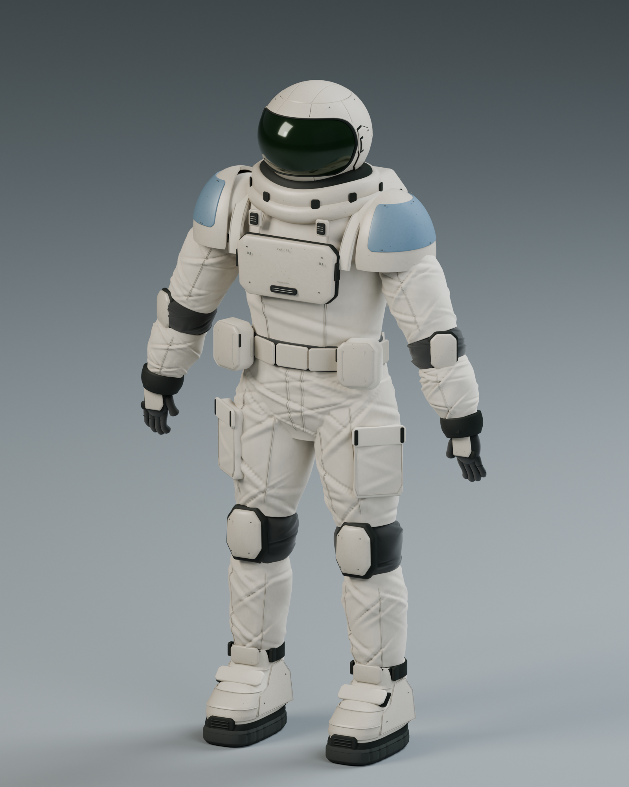

The approved original is preserved. Head v2 adds a shaped side-wrapped visor, broader chin frame and segmented helmet shell. Body, collar and pose are unchanged. Parent visual review is complete; this remains an additional version for Erik's choice.
Approved v1 Blender snapshot · Head v2 Blender source · Original seven-view gallery · Handoff and reproduction
Head comparison sheet · Reopened validation · Original preservation hashes · Complete supplied reference

Matched neutral close-ups: Cycles, 144 samples, 1600 x 1600. Click an image for full resolution. Helmet construction is still simpler and cleaner than the reference. Cloth and other body limitations are retained from the approved source.
| Approved v1 / preserved | Head v2 / additional variant |
|---|---|
 Approved v1 / front |  Additional head v2 / front |
 Approved v1 / side |  Additional head v2 / side |
 Approved v1 / back |  Additional head v2 / back |
 Approved v1 / hero |  Additional head v2 / hero |
Head v2 full figure, 1600 x 2000. Total evaluated triangles: 1,262,274.

The comparison uses real geometry renders. The reference above is a labelled crop of supplied artwork. No generated or retouched model preview was used. No rigging, UV/game preparation or runtime changes are part of this delivery.